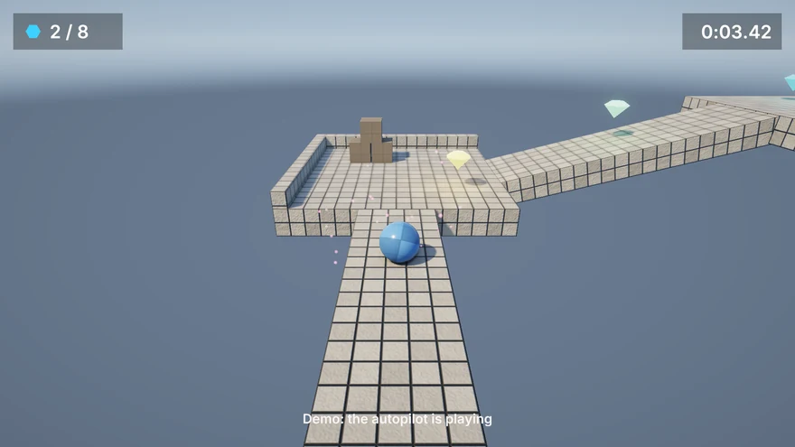

In pratica
Un game engine#
Finora ogni capitolo ha costruito una tecnica isolata: una shadow map qui, una catena di bloom là, ognuna nel suo piccolo programma.
Questo capitolo e i tre successivi le mettono insieme.
Il risultato è il LearnMetal Engine: un piccolo game engine fatto interamente con Metal, scritto due volte, una in Swift e una in C++, con sopra un piccolo gioco completo e un editor con cui costruire le scene.
È piccolo di proposito.
L'engine sta tra le cinque e le seimila righe in ciascun linguaggio, commenti compresi, ed è fatto per essere letto.
Non contiene nessuna tecnica che tu non abbia incontrato in queste pagine; di nuovo c'è il modo in cui i pezzi sono disposti perché lavorino insieme.
Prendi l'engine su GitHub Scaricalo come .zip
Scaricarlo ed eseguirlo#
L'engine vive in un repository tutto suo.
Ti servono macOS 13 o successivo e Xcode 15 o successivo.
git clone https://github.com/gabrielevierti/learnmetal-engine.git
cd learnmetal-engine
swift run Marble
Se vuoi il debugger e gli strumenti per la GPU, apri invece Package.swift in Xcode.
La versione C++ ha bisogno anche di CMake 3.24 o successivo.
La prima configurazione scarica le quattro librerie che usa: GLFW, metal-cpp, stb e miniaudio.
git clone https://github.com/gabrielevierti/learnmetal-engine.git
cd learnmetal-engine
cmake -B build -DCMAKE_BUILD_TYPE=Release
cmake --build build -j
./build/marble
Così parte Marble, il gioco di esempio.
Rotola con W A S D, salta con Spazio, guardati intorno con le frecce o trascinando il mouse.
Raccogli le otto gemme e raggiungi il disco luminoso.
Funziona anche un gamepad.
Premi F1 per le statistiche e F2 per vedere le forme della fisica.

Che cosa aggiunge un engine#
I programmi di esempio di questo sito hanno ciascuno una classe renderer che sa esattamente che cosa disegna: "un cubo e un pavimento", "nove sfere".
Questo smette di funzionare nel momento in cui l'elenco delle cose da disegnare viene deciso mentre il programma gira.
Un engine è ciò che ottieni quando separi ciò che esiste da come viene disegnato:
- Una scena contiene le cose che esistono: entità con una posizione, una mesh, una luce, un corpo fisico.
- Un renderer disegna qualunque cosa ci sia nella scena, senza sapere di che gioco si tratta.
- I sistemi cambiano la scena nel tempo: la fisica, le particelle, la logica propria del gioco.
- Un ciclo li esegue tutti in un ordine fisso, a ogni frame.
Intorno a questi stanno i servizi che un gioco dà per scontati: caricare file, l'input, il suono, un modo di disegnare un'interfaccia.
La forma di un gioco#
Un gioco è un oggetto con poche funzioni che l'engine chiama al momento giusto.
Eccone uno completo: un cubo che gira, illuminato da un sole, con un'ombra.
import Foundation
import LMEngine
import simd
final class Spin: Game {
var cube = Entity.invalid
func start(_ engine: Engine) {
let scene = engine.scene
let camera = scene.create("Camera")
scene.add(camera, Transform(position: Vec3(0, 1.5, 4), rotation: .lookRotation(forward: Vec3(0, -0.35, -1))))
scene.add(camera, Camera())
let sun = scene.create("Sun")
scene.add(sun, Transform(rotation: .lookRotation(forward: Vec3(0.4, -1, -0.3))))
scene.add(sun, Light(type: .directional, intensity: 3, castsShadows: true))
cube = scene.create("Cube")
scene.add(cube, Transform())
scene.add(cube, MeshRenderer(mesh: engine.assets.cube, material: engine.assets.makeMaterial(baseColor: Vec4(0.9, 0.4, 0.1, 1))))
}
func update(_ engine: Engine, dt: Float) {
engine.scene[cube, Transform.self]?.rotation = Quat(angle: Float(engine.time.elapsed), axis: Vec3(0, 1, 0))
}
}
// The engine lives on the main actor, so the program's first lines say they run there.
let result: Int32 = MainActor.assumeIsolated {
let engine = Engine(config: EngineConfig.fromArguments(CommandLine.arguments))
return engine.run(Spin())
}
exit(result)
#include "LMEngine.hpp"
using namespace lm;
struct Spin : Game {
Entity cube;
void start(Engine& engine) override {
Scene& scene = engine.scene;
Entity camera = scene.create("Camera");
Transform view;
view.position = Vec3{0, 1.5f, 4};
view.rotation = lookRotation(Vec3{0, -0.35f, -1});
scene.add(camera, view);
scene.add(camera, Camera{});
Entity sun = scene.create("Sun");
Transform sunDirection;
sunDirection.rotation = lookRotation(Vec3{0.4f, -1, -0.3f});
scene.add(sun, sunDirection);
Light light;
light.type = LightType::Directional;
light.intensity = 3;
light.castsShadows = true;
scene.add(sun, light);
cube = scene.create("Cube");
scene.add(cube, Transform{});
scene.add(cube, MeshRenderer{engine.assets().cube(), engine.assets().makeMaterial(Vec4{0.9f, 0.4f, 0.1f, 1})});
}
void update(Engine& engine, float) override {
engine.scene.get<Transform>(cube)->rotation = axisAngle(Vec3{0, 1, 0}, float(engine.time.elapsed));
}
};
int main(int argc, char** argv) {
Engine engine(EngineConfig::fromArguments(argc, argv));
Spin game;
return engine.run(game);
}
Dentro non c'è alcun render pass, alcun pipeline state, alcun buffer.
Il gioco dice che cosa esiste; tutto ciò che viene dai capitoli precedenti avviene dentro engine.run.
Nota come vengono puntati la camera e il sole.
Entrambi guardano lungo il proprio asse z negativo, come la camera del capitolo Camera, quindi dare loro una rotazione significa dare loro una direzione.
Il frame#
Engine possiede il ciclo.
A ogni frame fa le stesse cose nello stesso ordine:
private func simulate(_ game: Game, realDelta: Double) {
// Physics and the game's fixedUpdate advance in steps of constant length.
let steps = time.beginFrame(realDelta)
for _ in 0..<steps {
game.fixedUpdate(self, dt: time.fixedDelta)
runBehaviors(isFixedStep: true, dt: time.fixedDelta)
physics.step(scene, dt: time.fixedDelta)
scene.flushDestroyed()
}
// Show bodies where they are between the last two steps, for smooth motion at any frame rate.
physics.writeTransforms(scene, alpha: time.alpha)
game.update(self, dt: time.delta)
runBehaviors(isFixedStep: false, dt: time.delta)
scene.flushDestroyed()
scene.updateTransforms()
updateParticles(scene, dt: time.delta)
canvas.begin(size: screenSize, pixelsPerPoint: surface?.contentScale ?? Float(config.captureScale))
game.draw(self, canvas: canvas)
if showsColliders { drawColliders() }
if showsStatistics { drawStatistics() }
}
void Engine::simulate(Game& game, double realDelta) {
// Physics and the game's fixedUpdate advance in steps of constant length.
int steps = time.beginFrame(realDelta);
for (int i = 0; i < steps; i++) {
game.fixedUpdate(*this, time.fixedDelta);
runBehaviors(true, time.fixedDelta);
physics.step(scene, time.fixedDelta);
scene.flushDestroyed();
}
// Show bodies where they are between the last two steps, for smooth motion at any frame rate.
physics.writeTransforms(scene, time.alpha);
game.update(*this, time.delta);
runBehaviors(false, time.delta);
scene.flushDestroyed();
scene.updateTransforms();
updateParticles(scene, time.delta);
canvas_.begin(screenSize(), window_ ? window_->contentScale() : float(config_.captureScale));
game.draw(*this, canvas_);
if (showsColliders) drawColliders();
if (showsStatistics) drawStatistics();
}
Dopo, il renderer disegna la scena, e sopra di essa il canvas 2D.
L'ordine non è arbitrario.
La fisica gira prima dell'update del gioco, così la logica di gioco vede dove sono finite le cose.
Le matrici di mondo vengono calcolate dopo tutto ciò che può spostare un'entità, e prima dei due sistemi che ne hanno bisogno: le particelle e il renderer.
Le entità distrutte durante il frame vengono rimosse solo in punti fissi, così nessun sistema tiene mai un riferimento a qualcosa che è sparito a metà strada.
Un passo fisso per la fisica#
Il rendering impiega un tempo diverso a ogni frame.
Se la fisica avanzasse di quella stessa quantità variabile, una palla rimbalzerebbe in modo un po' diverso su ogni macchina, e un frame lento potrebbe farla passare attraverso un pavimento.
Quindi la fisica avanza sempre di un sessantesimo di secondo esatto, e l'engine decide quanti di questi passi stanno nel tempo trascorso:
accumulator += Double(delta)
var steps = 0
while accumulator >= Double(fixedDelta) && steps < maxStepsPerFrame {
accumulator -= Double(fixedDelta)
steps += 1
}
if steps == maxStepsPerFrame { accumulator = min(accumulator, Double(fixedDelta)) }
alpha = Float(accumulator / Double(fixedDelta))
accumulator_ += delta;
int steps = 0;
while (accumulator_ >= fixedDelta && steps < maxStepsPerFrame) {
accumulator_ -= fixedDelta;
steps++;
}
if (steps == maxStepsPerFrame) accumulator_ = std::min(accumulator_, double(fixedDelta));
alpha = float(accumulator_ / fixedDelta);
Il tempo reale viene versato nell'accumulatore e prelevato in porzioni fisse.
Su uno schermo a 120 Hz un frame su due non esegue alcun passo; dopo un intoppo un frame ne esegue diversi, fino a un limite.
Ciò che resta nell'accumulatore è una frazione di passo, alpha.
Il renderer non mostra i corpi nella loro ultima posizione fisica, ma in una miscela tra la precedente e l'ultima, a alpha del percorso.
È questo che rende fluido il movimento anche se la fisica conosce solo sessanta istanti al secondo.
Vale la pena ricordare una conseguenza: una funzione che gira "zero, una o più volte per frame" è il posto sbagliato per chiedere se un tasto è stato appena premuto.
Leggi l'input in update e ricordalo; applica le forze in fixedUpdate.
Un'unica fonte di verità per la GPU#
Ogni capitolo con un buffer di uniform aveva lo stesso avvertimento: la struct nello shader e la struct nel codice host devono coincidere byte per byte, e nessuno lo controlla.
In un engine con una dozzina di struct del genere e due linguaggi host, sperare non basta.
L'engine dichiara ogni struct una volta sola, in un header C letto da tutti e tre i compilatori.
Dentro uno shader i nomi di simd vengono fatti corrispondere ai tipi propri dello shader.
Ridotto a una sola struct, l'header è così:
// Shaders/Shared/ShaderTypes.h
#ifdef __METAL_VERSION__
typedef float2 simd_float2;
typedef float3 simd_float3;
typedef float4 simd_float4;
typedef float3x3 simd_float3x3;
typedef float4x4 simd_float4x4;
#else
#include <simd/simd.h>
#include <stdint.h>
#endif
enum {
LMBufferVertices = 0, // mesh vertices, described by the vertex descriptor
LMBufferPass = 1, // PassUniforms: the camera of the current pass
LMBufferInstances = 2, // InstanceData[], indexed by instance_id
LMBufferMaterial = 3, // MaterialUniforms
LMBufferFrame = 4, // FrameUniforms: sun, shadows, environment, fog
LMBufferLights = 5, // LightData[]
};
typedef struct {
simd_float4x4 model;
simd_float4x4 normalMatrix; // inverse transpose of model
simd_float4 tint; // multiplies the material's base color
} InstanceData;
Gli shader lo includono con #include.
Il codice host lo importa così:
// Package.swift: a C target whose only header is ShaderTypes.h
.target(name: "ShaderTypes", path: "Shaders/Shared", publicHeadersPath: "."),
.target(name: "LMEngine", dependencies: ["ShaderTypes"], path: "Swift/LMEngine"),
// Rendering/GPUTypes.swift: Swift-style names for the C constants
import ShaderTypes
enum BufferIndex {
static let vertices = Int(LMBufferVertices)
static let pass = Int(LMBufferPass)
static let instances = Int(LMBufferInstances)
static let material = Int(LMBufferMaterial)
static let frame = Int(LMBufferFrame)
static let lights = Int(LMBufferLights)
}
// Rendering/RenderPasses.swift
encoder.setVertexBuffer(batch.instances.buffer, offset: batch.instances.offset, index: BufferIndex.instances)
// Rendering/GPUTypes.hpp: the same header, inside a namespace
#include <simd/simd.h>
#include <cstdint>
namespace lm::gpu {
#include "ShaderTypes.h"
}
// Rendering/RenderPasses.cpp
encoder->setVertexBuffer(batch.instances.buffer, batch.instances.offset, gpu::LMBufferInstances);
Gli slot di binding stanno nello stesso header, quindi [[buffer(LMBufferInstances)]] in uno shader e l'indice passato all'encoder sono la stessa costante, non due numeri che per caso coincidono.
Due regole tengono al sicuro l'header.
Niente bool, la cui dimensione cambia da un linguaggio all'altro.
E ricorda che un float3 occupa sedici byte in tutti e tre i linguaggi: i test unitari controllano la dimensione di ogni struct, quindi un errore fa fallire un test e non un frame.
Dove è finito ogni capitolo#
| Capitolo | Nell'engine |
|---|---|
| Shader | Rendering/ShaderLibrary, che compila i file .metal all'avvio e li ricarica quando cambiano |
| Texture | Rendering/Texture, Assets/Assets |
| Trasformazioni, Camera | Math/Math, Scene/Scene |
| Più luci | Shaders/Lighting.metal |
| Modello | Assets/MeshData, con un suo lettore di file OBJ |
| Blending, Face culling | materiali trasparenti e ritagliati in Rendering/RenderPasses |
| Render target, Anti-aliasing | il pass principale in HDR e multisample |
| Cubemap | Rendering/Environment, Shaders/Sky.metal |
| Instancing | automatico, in Renderer.makeBatches |
| Shadow mapping | Rendering/Cascades: quattro shadow map invece di una |
| Normal mapping | tangenti in Assets/MeshData, Shaders/Forward.metal |
| HDR, Bloom, SSAO | Shaders/Post.metal |
| PBR, Irradianza diffusa, IBL speculare | Shaders/Lighting.metal, Shaders/IBL.metal |
| Debug | etichette su ogni pass, Rendering/DebugDraw |
| Rendering del testo, Un gioco 2D | Rendering/Canvas, con font a distance field |
| GPU tile-based | target memoryless, load e store action scelte pass per pass |
Non è entrato tutto.
Non ci sono i contorni con lo stencil, né un percorso deferred, né le ombre delle luci puntiformi, né il parallax mapping, né niente della sezione Oltre.
Un engine piccolo che fa bene poche cose è un posto migliore per aggiungerle di uno grande che fa tutto a metà.
Il prossimo capitolo apre il renderer.